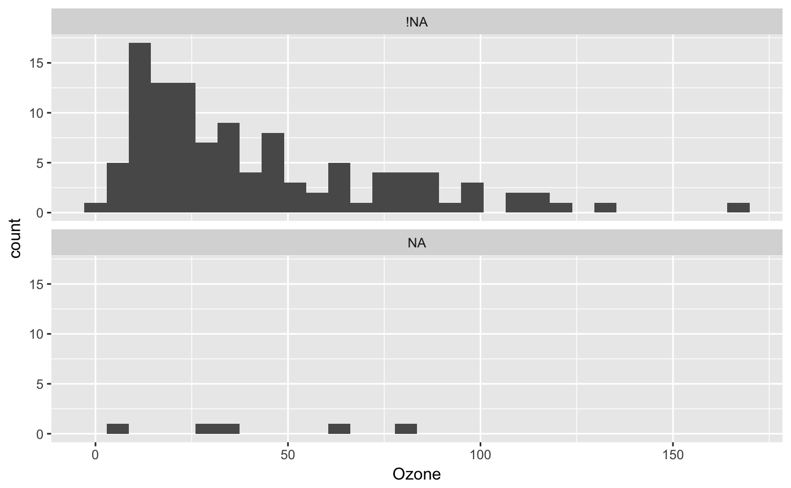

Binding a shadow matrix to a regular dataframe helps visualise and work with missing data.
bind_shadow(data, only_miss = FALSE, ...)
| data | a dataframe |
|---|---|
| only_miss | logical - if FALSE (default) it will bind a dataframe with all of the variables duplicated with their shadow. Setting this to TRUE will bind variables only those variables that contain missing values. See the examples for more details. |
| ... | extra options to pass to |
data with the added variable shifted and the suffix _NA
bind_shadow(airquality)#> # A tibble: 153 x 12 #> Ozone Solar.R Wind Temp Month Day Ozone_NA Solar.R_NA Wind_NA Temp_NA #> <int> <int> <dbl> <int> <int> <int> <fct> <fct> <fct> <fct> #> 1 41 190 7.4 67 5 1 !NA !NA !NA !NA #> 2 36 118 8 72 5 2 !NA !NA !NA !NA #> 3 12 149 12.6 74 5 3 !NA !NA !NA !NA #> 4 18 313 11.5 62 5 4 !NA !NA !NA !NA #> 5 NA NA 14.3 56 5 5 NA NA !NA !NA #> 6 28 NA 14.9 66 5 6 !NA NA !NA !NA #> 7 23 299 8.6 65 5 7 !NA !NA !NA !NA #> 8 19 99 13.8 59 5 8 !NA !NA !NA !NA #> 9 8 19 20.1 61 5 9 !NA !NA !NA !NA #> 10 NA 194 8.6 69 5 10 NA !NA !NA !NA #> # ... with 143 more rows, and 2 more variables: Month_NA <fct>, Day_NA <fct># bind only the variables that contain missing values bind_shadow(airquality, only_miss = TRUE)#> # A tibble: 153 x 8 #> Ozone Solar.R Wind Temp Month Day Ozone_NA Solar.R_NA #> <int> <int> <dbl> <int> <int> <int> <fct> <fct> #> 1 41 190 7.4 67 5 1 !NA !NA #> 2 36 118 8 72 5 2 !NA !NA #> 3 12 149 12.6 74 5 3 !NA !NA #> 4 18 313 11.5 62 5 4 !NA !NA #> 5 NA NA 14.3 56 5 5 NA NA #> 6 28 NA 14.9 66 5 6 !NA NA #> 7 23 299 8.6 65 5 7 !NA !NA #> 8 19 99 13.8 59 5 8 !NA !NA #> 9 8 19 20.1 61 5 9 !NA !NA #> 10 NA 194 8.6 69 5 10 NA !NA #> # ... with 143 more rowsaq_shadow <- bind_shadow(airquality) # explore missing data visually library(ggplot2) # using the bounded shadow to visualise Ozone according to whether Solar # Radiation is missing or not. ggplot(data = aq_shadow, aes(x = Ozone)) + geom_histogram() + facet_wrap(~Solar.R_NA, ncol = 1)#>#> Warning: Removed 37 rows containing non-finite values (stat_bin).